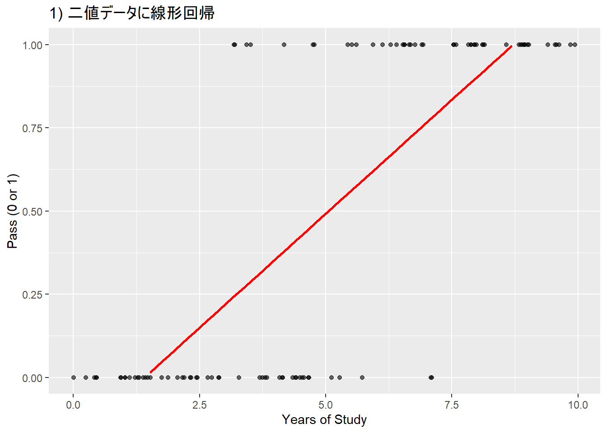
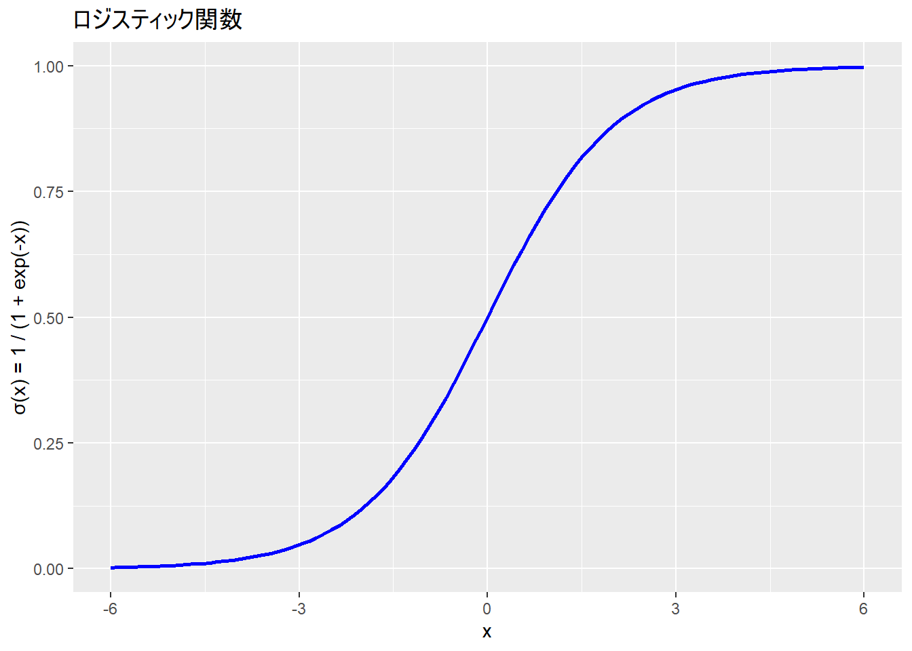
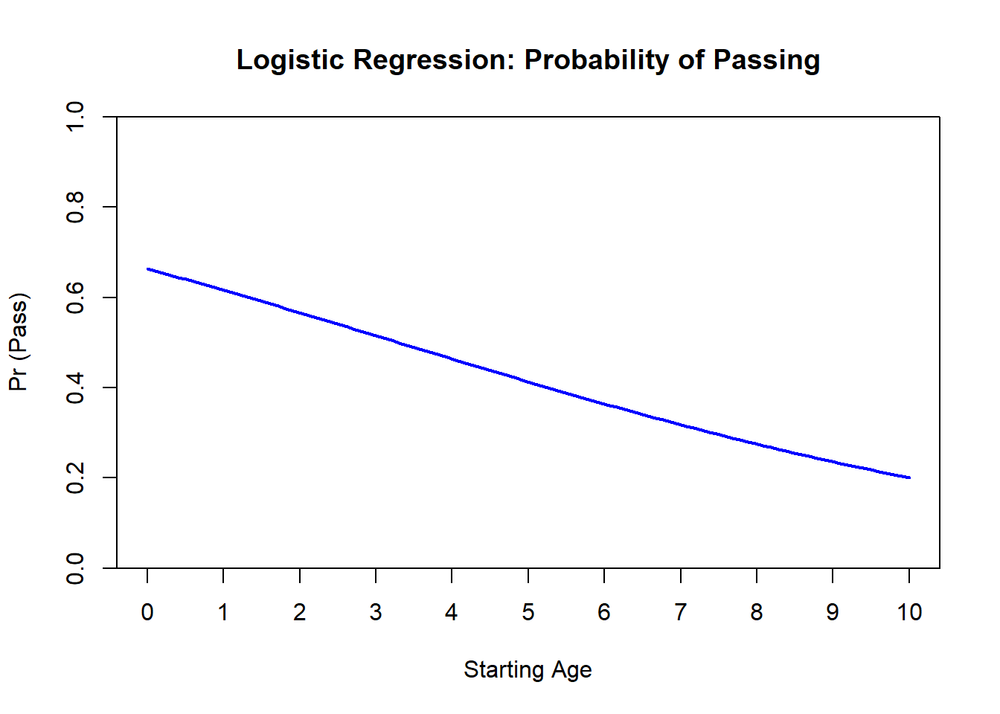
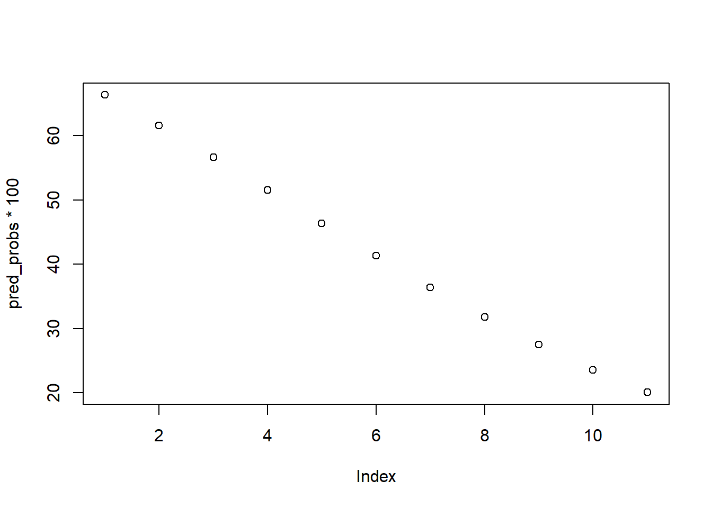
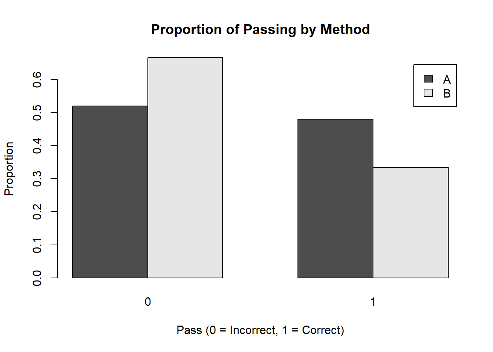
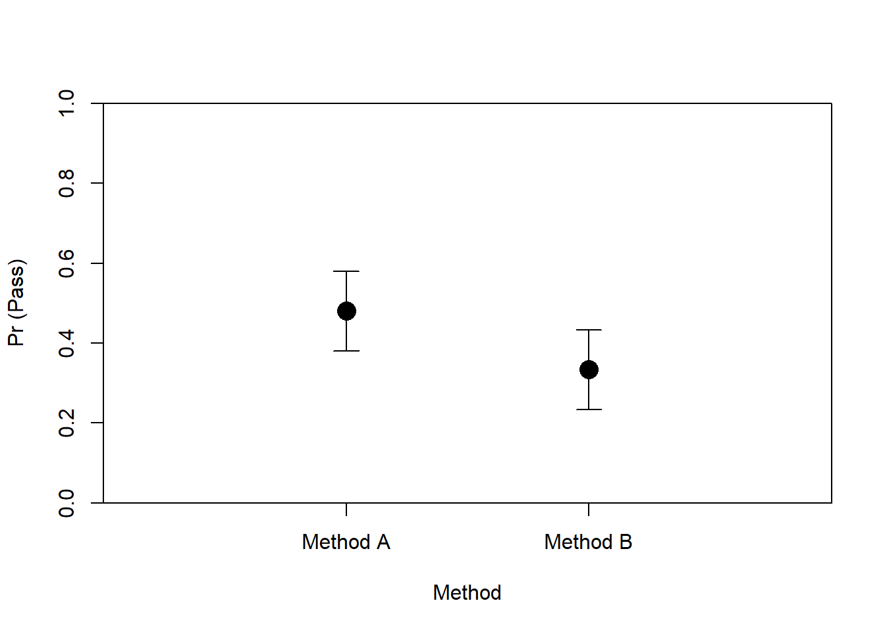
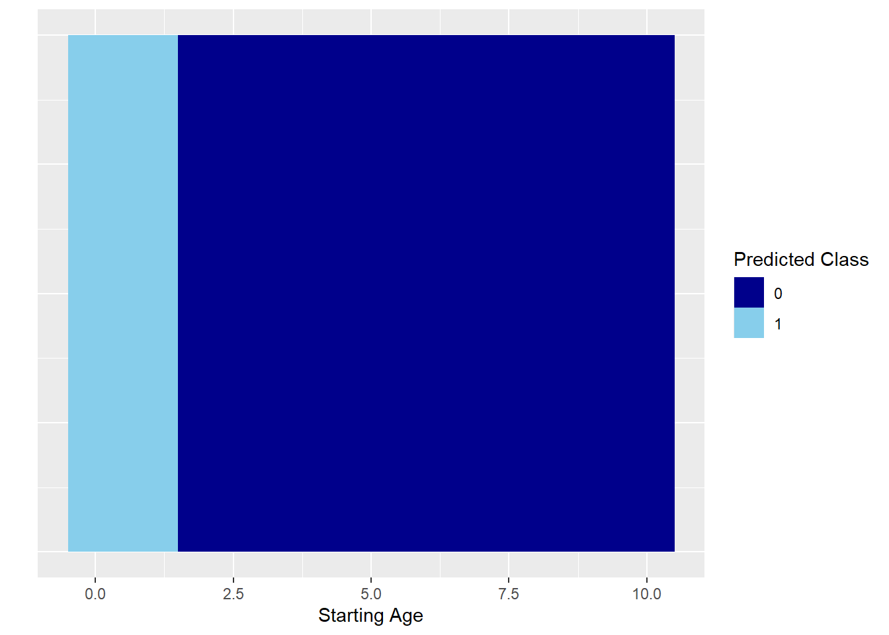

Chapter 11 Week10: 一般化線形モデル：ロジスティック回帰分析
11.3 一般化線形モデル
確率分布に正規分布以外を仮定する（一般線形モデル = 正規分布を仮定）
世の中には、正規分布で表現するのが難しい事象がある
テストへの合格/不合格
所得の分布
信頼できる友達の数
glm()関数で使用できる分布- 外国語研究、言語研究では、正規分布、二項分布、対数正規分布などが用いられる
binomial(link = "logit")
gaussian(link = "identity")
Gamma(link = "inverse")
inverse.gaussian(link = "1/mu^2")
poisson(link = "log")
quasi(link = "identity", variance = "constant")
quasibinomial(link = "logit")
quasipoisson(link = "log")使用するRの関数によって、使用できる確率分布が異なります。glm関数には対数正規分布は含まれていません。
11.4 二項分布
- ある試行を N 回行った際の成功回数 k が発生する確率 q
\[ p(k \mid N, q) = \binom{N}{k} q^k (1 - q)^{N - k} \]
\[ \binom{N}{k} = \frac{N!}{k!(N-k)!} \]
11.4.1 身近な例
寺井と雅人がじゃんけんを10回する。寺井が雅人に K 回勝つ確率を求める（勝つ可能性は50 %）
寺井が2回勝つ場合 (\(k = 2\))
\[ P(X = 2) = \binom{10}{2} (0.5)^2 (0.5)^{10-2} = \binom{10}{2} (0.5)^{10} \]
ここで、二項係数は次のように計算（8!をまとめて消している）：
\[ \binom{10}{2} = \frac{10 \times 9}{2 \times 1} = 45 \]
したがって、確率は：
\[ P(X = 2) = 45 \times (0.5)^{10} = 45 \times \frac{1}{1024} \approx 0.043945 \]
2回勝つ確率は約 0.0439
- 寺井が4回勝つ場合 (\(k = 4\))
\[ P(X = 4) = \binom{10}{4} (0.5)^4 (0.5)^{10-4} = \binom{10}{4} (0.5)^{10} \]
\[ \binom{10}{4} = \frac{10 \times 9 \times 8 \times 7}{4 \times 3 \times 2 \times 1} = 210 \]
したがって、確率は：
\[ P(X = 4) = 210 \times (0.5)^{10} = 210 \times \frac{1}{1024} \approx 0.205078 \]
- 4回勝つ確率は約 0.2051
# パラメータ
N <- 10 # 試行回数
k <- 4 # 成功回数
p <- 0.5 # 成功確率（例えば、50%の確率）
# 2項分布における確率を計算
prob <- dbinom(k, size = N, prob = p)
print(prob)## [1] 0.2050781線形回帰を2値のデータに当てはめたモデルは、予測値（直線）が1以上であったり0以下であったりしている（本来は1 = 合格、0 = 不合格）
- 予測値を0から1に収まるようにする必要がある。これを行うための関数がロジスティック関数

- 切片の値はマイナスとなっており、0-1という確率の範囲を超えている。
| Pass | |||
|---|---|---|---|
| Predictors | Estimates | CI | p |
| (Intercept) | -0.19 | -0.32 – -0.07 | 0.003 |
| Years of Study | 0.14 | 0.11 – 0.16 | <0.001 |
| Observations | 100 | ||
| R2 / R2 adjusted | 0.604 / 0.599 | ||
11.5 ロジット関数
- 0か1しかとらない従属変数が1になる確率（確率は0と1ではなく、0から1の間をとる）を P とすると、0になる確率は 1 - P。この二つの比をオッズ比という。
\[ \text{odds ratio} = \frac{P}{1 - P} \]
確率（ P ）を対数オッズに変換（ロジット変換という）
対数オッズのことをロジットという
0から1しかとらない値を、-∞ ~ ∞を取る連続値のデータに変換する関数がロジット関数
\[ \text{logit}(P) = \log \left( \frac{P}{1 - P} \right) \]
ロジット関数により、
この変換で、従属変数の値が0か1かという制約がなくなり、線形モデルとして偏回帰係数を推定できる
- 線形モデルで当てはめる方が計算などの都合がいいから
線形モデルとは異なり、曲線であるため、1単位の変化量が異なる
logit(0.5) = 0、logit(0.6) = 0.4 => ロジットスケールでの0.4の変換は変換前の単位での50%から60%の変更に対応
logit(0.9) = 2.2、logit(0.93) = 2.6 => ロジットスケールでの0.4の変換は変換前の単位での90%から93%の変更に対応

11.6 ロジスティック関数
この関数を使うことで、説明変数の集まり（線形予測子：線形結合した説明変数）がどの範囲に合っても、0 ~ 1の範囲に収まる（確率を表すのに最適！）。
ロジスティック回帰ではリンク関数にロジット関数をおき、確率を線形予測子に変換
ロジスティック関数は逆リンク関数として使われ、線形予測子から確率を復元する
- リンク関数：従属変数を変換し、独立変数関数につなげる変換関数、独立変数を変換する場合は「逆」リンク関数
\[ \text{logistic}(x) = \frac{1}{1 + e^{-x}} \]

11.7 ハンズオンセッション
11.7.1 疑似データの用意
Pass： テストの合否。1なら合格、0なら不合格
Method：指導法A、指導法B
Starting_age：英語を勉強し始めた年齢
set.seed(123) # 再現性のため
dat <- data.frame(
Pass = sample(0:1, 40, replace = TRUE), # 1 または 0
Method = sample(c("A", "B"), 40, replace = TRUE), # A または B
Starting_age = sample(0:10, 40, replace = TRUE) # 0 ~ 10 の数値
)## Pass Method Starting_age
## 1 0 A 5
## 2 0 B 10
## 3 0 B 7
## 4 1 A 5
## 5 0 A 5
## 6 1 A 6## Pass Method Starting_age
## Min. :0.000 Length:40 Min. : 0.000
## 1st Qu.:0.000 Class :character 1st Qu.: 2.000
## Median :0.000 Mode :character Median : 5.000
## Mean :0.425 Mean : 4.875
## 3rd Qu.:1.000 3rd Qu.: 7.000
## Max. :1.000 Max. :10.00011.7.2 モデルの推定
glm()関数を使用するfamilyで確率分布を指定する
Estimate: 偏回帰係数
Std. Error (Standard Error): 標準誤差
- かなり重要。どれくらい推定に誤差があるかを示す指標。「同じ調査法で同じ数のデータをとりなおしてみると、推定値も結構変わるので、そのバラツキ度合い」
z value：z値と呼ばれる統計量（Wald統計量とも言われる）。Estimate ÷ SE で算出。この値で、Wald信頼区間を算出し、その値がゼロから十分に離れているかの目安になる。
Pr(>|z|): 平均が z値の絶対値で、標準偏差が1の正規分布において、マイナス無限大からゼロまでの値をとる確率。この確率が大きいほどZ値がゼロに近くなり、Estimateがゼロに近い。
p 値（アスタリスク）：95%CIに0を含む場合有意とされる
##
## Call:
## glm(formula = Pass ~ Starting_age, family = binomial(link = "logit"),
## data = dat)
##
## Coefficients:
## Estimate Std. Error z value Pr(>|z|)
## (Intercept) 0.6788 0.6650 1.021 0.3073
## Starting_age -0.2061 0.1238 -1.665 0.0959 .
## ---
## Signif. codes: 0 '***' 0.001 '**' 0.01 '*' 0.05 '.' 0.1 ' ' 1
##
## (Dispersion parameter for binomial family taken to be 1)
##
## Null deviance: 54.548 on 39 degrees of freedom
## Residual deviance: 51.559 on 38 degrees of freedom
## AIC: 55.559
##
## Number of Fisher Scoring iterations: 4- 95%信頼区間の算出
## 2.5 % 97.5 %
## (Intercept) -0.6010333 2.05617252
## Starting_age -0.4667027 0.0268193611.7.3 作図
# 年齢（Years_of_Study）の範囲を設定
years_range <- seq(0, 10, length.out = 100)
# 各年数に対する予測確率を計算
pred_probs <- predict(res, newdata = data.frame(Starting_age = years_range), type = "response")
# 予測確率を描画
plot(
years_range, pred_probs,
type = "l", # 線で描画
col = "blue",
lwd = 2,
xlab = "Starting Age",
ylab = "Pr (Pass)",
main = "Logistic Regression: Probability of Passing",
ylim = c(0, 1),
xaxt = "n", yaxs = "i"
)
# x軸のカスタムラベルを追加
axis(1, at = seq(0, 10, by = 1), labels = seq(0, 10, by = 1))
11.7.4 オッズ比の算出
オッズ比：オッズの変化量。ロジスティック回帰モデルの回帰係数に指数関数を適用すると算出できる。
- 指数関数をとると、その値は必ず正の値になる
| Estimate | オッズ比 | 解釈 |
|---|---|---|
| 正（> 0） | > 1 | オッズが 増加 |
| 0 | = 1 | オッズは 変化なし |
| 負（< 0） | < 1 | オッズが 減少 |
- 係数がマイナスだったので、 オッズ比 < 1となっている点に注意
## (Intercept) Starting_age
## 1.9715609 0.8137445## 2.5 % 97.5 %
## (Intercept) 0.5482448 7.815997
## Starting_age 0.6270665 1.02718211.7.5 結果報告の例と解釈
英語の学習年数の主効果の係数は有意ではなかった（Estimate = -0.21 [-0.47, 0.03], SE = 0.12, z = -1.67, p = .10, OR = 0.81 [0.63, 1.03]）。傾向として、英語学習開始歴が1年増えると、テストに合格するオッズが0.81倍になる（ = 合格するオッズが [1 - 0.81 = 19] 19%低い）と予測される。
もし係数が0.21だった場合、オッズ比は
exp(0.21) = 1.23。この場合、- 英語学習歴が1年増えると、テストに合格する**オッズが1.23倍になる。つまり、テストに合格するオッズは（不合格となる場合に比べ）（1.23 - 1 = 0.23）23%増加すると予測される。
しかし、オッズやオッズ比で結果を言われても解釈が少し難しい。
predict関数で具体的な合格する確率を算出する方が分かりやすい。
# 年齢（Years_of_Study）の範囲を設定
years_range <- seq(0, 10)
# 各年数に対する予測確率を計算
pred_probs <- predict(res, newdata = data.frame(Starting_age = years_range), type = "response")- 100を書けて%単位に変換
## 1 2 3 4 5 6 7 8
## 66.34765 61.60266 56.62600 51.51202 46.36618 41.29658 36.40504 31.77923
## 9 10 11
## 27.48716 23.57445 20.06459- 作図

11.8 質的変数の場合
## Method Pass
## 1 A 0.4800000
## 2 B 0.3333333##
## A B
## 25 15# Methodごとの正答率を計算
table_data <- table(dat$Method, dat$Pass)
# 棒グラフで可視化
barplot(prop.table(table_data, margin = 1), beside = TRUE,
legend = rownames(table_data), xlab = "Pass (0 = Incorrect, 1 = Correct)",
ylab = "Proportion", main = "Proportion of Passing by Method")
11.8.1 トリートメントコントラスト
## B
## A 0
## B 1- Method Bの係数：Method B - Method A
##
## Call:
## glm(formula = Pass ~ Method, family = binomial(link = "logit"),
## data = dat)
##
## Coefficients:
## Estimate Std. Error z value Pr(>|z|)
## (Intercept) -0.08004 0.40032 -0.200 0.842
## MethodB -0.61310 0.67842 -0.904 0.366
##
## (Dispersion parameter for binomial family taken to be 1)
##
## Null deviance: 54.548 on 39 degrees of freedom
## Residual deviance: 53.713 on 38 degrees of freedom
## AIC: 57.713
##
## Number of Fisher Scoring iterations: 4- 95%信頼区間の算出
## Waiting for profiling to be done...## 2.5 % 97.5 %
## (Intercept) -0.8789758 0.710550
## MethodB -2.0030397 0.69251111.8.2 オッズ比
- Methodのオッズ比は0.54だった。よってMethod BはAに比べ、合格の成功オッズが(1 - 0.54 = 0.46) 46%低い
## (Intercept) MethodB
## 0.9230769 0.5416667## Waiting for profiling to be done...## 2.5 % 97.5 %
## (Intercept) 0.4152080 2.035110
## MethodB 0.1349245 1.99872811.8.3 確率を計算
# glmモデルの結果を使って予測確率を計算
pred_probs_A <- predict(res.2, newdata = data.frame(Method = "A"), type = "response")
pred_probs_B <- predict(res.2, newdata = data.frame(Method = "B"), type = "response")## 1
## 0.48## 1
## 0.333333311.8.4 作図
#install.packages("arm")
library(arm)
# Method A と Method B の予測確率を描画
plot(
c(1, 2), c(pred_probs_A, pred_probs_B),
pch = 16, col = "black", cex = 2,
xlim = c(0, 3),
ylim = c(0, 1),
xaxt = "n", xlab = "Method", ylab = "Pr (Pass)",
xaxs = "i", yaxs = "i"
)
# 信頼区間のエラーバーを追加
arrows(1, pred_probs_A - 0.1, 1, pred_probs_A + 0.1, angle = 90, code = 3, length = 0.1, col = "black")
arrows(2, pred_probs_B - 0.1, 2, pred_probs_B + 0.1, angle = 90, code = 3, length = 0.1, col = "black")
# x軸のカスタムラベルを追加 (Method A と Method B)
axis(1, at = c(1, 2), labels = c("Method A", "Method B"))
11.9 分類にも使えます
機械学習などでは分類モデル（2つのカテゴリのデータ）として用いられたりします。
- 以下では、合格の予測確率が0.6未満の場合やばい（0）、0.6以上の場合安心（1）と分類しています
pred_probs <- predict(res, type = "response", newdata = data.frame(Starting_age = dat$Starting_age))
# 予測クラスを作成
pred_class <- ifelse(pred_probs > 0.6, 1, 0)
# 元のデータに予測確率と予測クラスを追加
new_data <- dat %>%
mutate(pred_probs = pred_probs,
pred_class = pred_class)
# ggplotで視覚化
ggplot(new_data, aes(x = Starting_age, y = 1, fill = factor(pred_class))) +
geom_tile(height = 1, width = 1) + # 矩形のサイズ調整
scale_fill_manual(values = c("darkblue", "skyblue")) +
labs(x = "Starting Age", y = "", fill = "Predicted Class") +
theme(axis.text.y = element_blank(), axis.ticks.y = element_blank())
11.10 次週までの課題
11.11 参考文献
- 草薙（2017） 確率分布から見る外国語教育研究データ
- Gelman Regression and Other stories
- 馬場 RとStanではじめるベイズ統計モデリングによるデータ分析
- Rを用いた一般化線形混合モデル（GLMM）の分析手法を身につける:言語研究分野の事例をもとに
- 小杉 「言葉と数式で理解する多変量解析入門」
- https://bellcurve.jp/statistics/course/26934.html?srsltid=AfmBOorwQsuSpgEx3zQ8gVhrS2zSP50-PUvuzRlNqNP-rxWB2J_XBwyf
- https://hkawabata.github.io/technical-note/note/ML/logistic-regression.html
- Terai, M., Fukuta, J., & Tamura, Y. (2024). Learnability of L2 collocations and L1 influence on L2 collocational representations of Japanese learners of English. International Review of Applied Linguistics in Language Teaching, 62(4), 1959-1983.